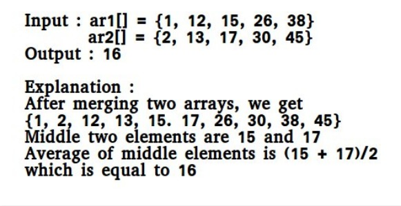

There are 2 sorted arrays A and B of size n each.
Write an algorithm to find the median of the array
obtained after merging the above
2 arrays(i.e. array of length 2n).
The complexity should be O(log(n)).

Use the merge procedure of merge sort.
Keep track of count while comparing
elements of two arrays. If count becomes n
(For 2n elements), we have reached the median. Take the average of the
elements at indexes n-1 and n in the merged array.
See the below implementation.
// A Simple Merge based O(n) solution to find median of
// two sorted arrays
#include <stdio.h>
/* This function returns median of ar1[] and ar2[].
Assumptions in this function:
Both ar1[] and ar2[] are sorted arrays
Both have n elements */
int getMedian(int ar1[], int ar2[], int n){ int i = 0; /* Current index of i/p array ar1[] */
int j = 0; /* Current index of i/p array ar2[] */
int count; int m1 = -1, m2 = -1; /* Since there are 2n elements, median will be average
of elements at index n-1 and n in the array obtained after
merging ar1 and ar2 */
for (count = 0; count <= n; count++)
{
/*Below is to handle case where all elements of ar1[] are
smaller than smallest(or first) element of ar2[]*/
if (i == n) { m1 = m2; m2 = ar2[0]; break; } /*Below is to handle case where all elements of ar2[] are
smaller than smallest(or first) element of ar1[]*/
else if (j == n) { m1 = m2; m2 = ar1[0]; break; } /* equals sign because if two
arrays have some common elements */
if (ar1[i] <= ar2[j])
{ m1 = m2; /* Store the prev median */
m2 = ar1[i]; i++; } else { m1 = m2; /* Store the prev median */
m2 = ar2[j]; j++; } }
return (m1 + m2)/2;}/* Driver program to test above function */
int main(){ int ar1[] = {1, 12, 15, 26, 38};
int ar2[] = {2, 13, 17, 30, 45};
int n1 = sizeof(ar1)/sizeof(ar1[0]); int n2 = sizeof(ar2)/sizeof(ar2[0]); if (n1 == n2) printf("Median is %d", getMedian(ar1, ar2, n1));
else printf("Doesn't work for arrays of unequal size"); getchar(); return 0;} |
Median is 16
O(N) where N is the number of elements present in the array. Here we run one loop .
O(1) because we don't use any auxiliary space we just use start and end variables to swap the array.